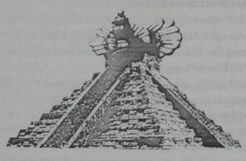
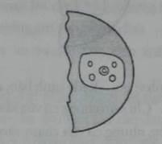
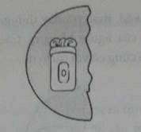
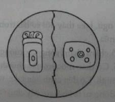

Trong một góc khuất của sân viện bảo tàng, Jake đứng tựa vào một cái đầu khổng lồ đẽo bằng đá lấy từ Đảo Phục Sinh. Cặp chân mày rậm và một cái mũi nhọn hoắt dược khắc bằng đá bazan đen. Jake thấy vẻ lạnh lẽo của nó cũng giống như vẻ lạnh lẽo của đám khán giả mà nãy giờ cậu âm thầm thăm dò vậy.
Tất cả khách mời đều mặc áo tuxedo và đầm dạ hội; đều cầm một ly sâm banh. Một anh phục vụ mang chiếc khay bạc đựng bánh mì nướng phủ trứng cá hồi lướt đi thoăn thoắt giữa họ. Một phụ nữ nọ đội một chiếc vương miện kim cương trên mái tóc trắng búi cao của mình.
Bà ấy thuộc dòng dõi hoàng gia ư?
Ở một góc khác, Kady đang hồ hởi trong ánh đèn máy quay của đài truyền hình. Một phóng viên cầm micro xù lông chĩa vào mũi cô. “Vậy xin cô cho các khán giả của đài BBC1 biết,” phóng viên nói, “cô có vui mừng khi tham gia buổi triển lãm lần này không?”
“Ồ, dĩ nhiên là có rồi". Kady trả lời và khẽ xoay đầu. Jake biết cô đang cố làm nổi bật phần đẹp nhất của mình, hay ít nhất đó là phía mà cô đã quyết định là phù hợp nhất để lên truyền hình vào sáng nay.
Chị cậu vẫn đang tiếp tục buổi phỏng vấn, tay chuyển động không ngừng. Cô hơi nhón chân cao lên một tí để bảo đảm rằng các lọn tóc quăn chải chuốt cẩn thận được tung bay đúng kiểu.
Jake khoanh tay lại. Những lời tiết lộ của ông Morgan Drummond về mục đích thật sự mà hai đứa có mặt ở đây làm cho cậu thấy khó chịu. Chỉ để bán được nhiều vé hơn. Cậu thả tay ra, giật giật bộ cánh đi săn. Cậu chỉ muốn giật phăng bộ đồ ra và biến khỏi nơi này. Nhưng sau đó? Cậu còn phải tính đến chị Kady nữa. Kady chắc hẳn sẽ không đi đâu cả.
Jake xoay sang hướng khác. Ở bên ngoài khu vực đám đông, cậu nhìn thấy một dải ruy băng dày màu đỏ giăng kín trên đỉnh cầu thang dẫn lên tầng hai. Một người đàn ông đội mũ chóp cao cầm một cây kéo quá khổ nhìn giống như kéo xén cỏ vậy.
“Quản lý viện bảo tàng,” Ông Morgan Drummond nói cạnh ngay bên cạnh làm cậu giật mình. Người đàn ông to béo đã luồn đến sau cậu từ lúc nào. “Sẽ không còn lâu nữa đâu. Nó sẽ kết thúc trước khi anh bạn kịp nhận ra nữa.”
Những lời thì thầm nghe chừng như một lời đe dọa vậy. Có lẽ do nó đi theo cùng với một tiếng gầm của sấm.
Jake nhún vai và thoát ra khỏi bóng của ngài Drummond. Cậu lại ngước nhìn lên bầu trời lần nữa. Mặt trăng đã gần như che khuất cả mặt trời.
Mặc dù đã có kính bảo vệ, quầng sáng của mặt trời viền quanh mặt trăng vẫn bừng bừng và làm đau mắt cậu.
Jake chớp mắt và quay đi khi tiếng chuông vang lên, báo hiệu sự kiện chính thức được bắt đầu.
Đến rồi! Cậu nghe tim mình đập dồn. Mọi con mắt đều đổ dồn về phía trước khi người quản lý viện bảo tàng giơ một tay lên dập tắt những tiếng xì xào trong đám đông.
Ánh đèn máy quay đang rọi vào Kady đột ngột vụt tắt. Cô xìu xuống như cái cây thiếu ánh mặt trời.
“Đi thôi nào,” Drummond nói.
Người phụ trách bảo tàng nâng kéo lên. “Giá mà chúng ta có thể mời hai đứa trẻ nhà Ransom lên đây với tôi.” Ông ta gọi lớn. “Sự có mặt của hai cháu ở đây trong dịp may này thực là hợp lắm. Để vinh danh cha mẹ hai cháu, Tiến sĩ Richard và Penelope Ransom.”
Morgan Drummond lùa Jake khỏi chỗ cậu đang lẩn và đưa ra trước ánh đèn sân khấu.
Họ nhập cùng Kady đang tiến lên cầu thang.
Những tiếng vỗ tay lốp đốp động viên họ bước lên những bậc thang.
Người quản lý tiếp tục, “Tôi chắc mọi người đều biết câu chuyện nhà Ransom, chuyện họ tìm ra Ngọn Núi Xương, một trong những địa điểm khảo cổ về thế giới Maya cổ xưa và khắc nghiệt nhất. Vượt qua mọi trở ngại khó khăn - từ những con báo đốm ăn thịt người đến loài muỗi mang bệnh sốt rét - họ đã khám phá ra một lăng mộ vĩ đại, chôn giấu biết bao cổ vật vô giá không những đối với lịch sử mà còn đối với sự hiểu biết của chúng ta về nền văn minh Maya cổ xưa. Bảo tàng Anh quốc, nhờ có sự tài trợ hào phóng và rộng lượng của tập đoàn Bledsworth Sundries and Industries,” người quản lý gật đầu với Drummond khi ông đang leo lên cầu thang cùng với Jake và Kady, “rất tự hào được lần đầu tiên giới thiệu trước công chúng:
"NHỮNG KHO TÀNG CỦA NGƯỜI MAYA Ở TÂN THẾ GIỚI!"
Thêm một tiếng sấm gầm lên sau lời tuyên bố.
Khi Jake và Kady lên đến đỉnh cầu thang, người quản lý chỉ lên bầu trời và la lên, “Xem kìa!”
Mọi ánh đèn trong sân đều tắt hết.
Jake ngước lên. Nó đang xảy ra!
Mặt trăng nhích từng li nhỏ, để rồi che phủ toàn bộ mặt trời.
Hiện tượng nhật thực đã xảy ra toàn phần. Vầng hào quang của mặt trời chiếu những tia chói lóa quanh mặt trăng đen thẫm, cứ như mặt trời đen đang bị thiêu đốt bừng bừng trên cõi thiên đường.
Jake nín thở trong nỗi phấn khích.
Dưới ánh sáng của hiện tượng nhật thực, cả gian phòng chìm trong sắc chạng vạng huyền ảo.
Mặt đá hoa của cung điện lấp lánh ánh bạc như thể cả sàn nhà và tường hắt sáng từ một ngọn đèn bên trong.
Người quản lý nói trong bóng tối. “Chính những người Maya đã dự đoán được hiện tượng nhật thực hôm nay thông qua những nghiên cứu và tính toán thiên văn cổ xưa. Chúng tôi chọn thời khắc thiên định này để khai mạc buổi triễn lãm.” Ông quay sang cây kéo khổng lồ. “Ransom, giúp tôi dược chứ?"
Ánh đèn sân khấu lóa lên tràn ngập đến tận đỉnh cầu thang.
Jake rời mắt khỏi bầu trời, nhìn xuống dải ruy băng đỏ. Cậu biết rằng ngay sau dải ruy băng mỏng manh này là dãy hành lang dẫn đến kho tàng của cha mẹ. Cậu gật đầu, nóng lòng thúc giục, làm đi nào.
Người quản lý toét miệng cười và giơ một bàn tay ra, buộc Jake phải đứng đơ ra đó chờ đợi trong khi ánh đèn flash máy ảnh liên tục nhá lên phía dưới. Kady đứng khoanh tay cứng ngắc trước ngực. Jake biết cậu sẽ phải trả giá lát sau đó vì dám chiếm mất sự chú ý dành cho cô trong lúc này.
Cứ như thể là cậu được phép chọn lựa vậy.
Jake giữ nửa bên cây kéo và cùng với người quản lý cắt dải ruy băng bằng một cú nháp nhẹ nhàng.
Khi cây kéo được khép lại và dải ruy băng bay đi, một ánh chớp sáng lòa xé ngang bầu trời. Sấm nổ tiếp ngay sau dó. Trần phía trên lạo xạo dưới lực tác động ở quá gần. Mọi người lặng thinh vì khiếp hãi - rồi một tiếng cười nhỏ vang lên sau đó.
Người quản lý nháy mắt với Jake, "Chà, chúng ta không thể sắp xếp một thời điểm nào lý tưởng hơn lúc này phải không nào, chàng trai?”. Ông cầm lấy kéo và đứng thẳng người dậy.
Jake quay lên nhìn bầu trời. Những đám mây bão đã kéo đến che cảnh tượng nhật thực và làm cậu trông thật mờ nhạt. Cảnh tranh sáng tranh tối thẫm màu bao trùm cả khoảng sân.
Người quản lý hướng một cánh tay về phía khán giả. “Mọi người hãy ở yên vị trí của mình. Chúng tôi sẽ bật đèn trong sân lại trong vài phút nữa. Trong khi chờ đợi, có lẽ tốt nhất ta nên cho chị em nhà Ransom vào phòng triển lãm trước, để hai cháu tận hưởng khoảnh khắc riêng tư cùng những món báu vật mà cha mẹ hai cháu đã tìm ra.”
Những tiếng xì xầm “À nhỉ” và “Cảm động quá” lan ra từ phía khán giả; cùng những tiếng vỗ tay nho nhỏ.
Nhưng bỗng có một giọng nói vang lên vượt trên mọi âm thanh khác, đầy miệt thị, “Những món báu vật cha mẹ chúng tìm ra? Ôi dào, ăn cắp thì đúng hơn!” Chữ “ăn cắp” vang lên giữa sân viện như một cú bắn xoáy.
Tiếp theo sau là một sự im lặng sững sờ.
Người đàn ông tiếp tục, "Thế còn về tin đồn rằng người nhà Ransom vẫn còn sống ở Nam Mỹ thì sao? Rằng họ đã chơi trò mất tích để cuỗm đi những thứ quý nhất của kho báu!”
Tim Jake leo lên đến cổ họng. Nỗi tức giận đốt bừng hai má cậu. “Xin nghe cho, xin nghe cho.." ông quản lý nói. “Chúng tôi không muốn có bất cứ lời phỉ báng bẩn thỉu nào nữa...”
Một tiếng gầm to cắt ngang lời ông, “Richard và Penelope Ransom chẳng khác nào những tên trộm tầm thường cả, tôi nói cho ông biết!”
Đèn nhấp nháy rồi sáng lại trong sân.
Jake tháo kính bảo hộ ra, nhận ra người đàn ông trong đám đông.
Đó là người phóng viên trông như con cóc ngồi ăn bánh rán bên ngoài lúc nãy.
Jake lùi một bước lại, sẵn sàng nhảy xuống và yêu cầu gã phải nuốt lại những gì vừa nói nhưng một bàn tay to lớn đã ngăn cậu lại và đẩy cậu xuống đầu cầu thang tầng hai.
Morgan Drummond nhẹ nhàng đẩy Kady đi theo sau cậu. “Không cần thiết phải nghe những lời nói xấu này, cứ tiếp tục vào xem triển lãm."
Đằng sau ông, người quản lý đã gọi bảo vệ. Những người bảo vệ chạy ngang qua Jake và Kady, tuôn xuống những bậc thang.
Người đàn ông kia vẫn gào lên, "Đồ kẻ cắp! Đồ bịp bợm. Máu vấy trên bàn tay những người nhà Ransom".
Mỗi lời nói là một nhát dao đâm vào tim Jake.
Drummond đẩy cậu di. "Đi đi! Tôi sẽ vào ngay."
Kady liếc nhìn cậu. Mắt cô mở to, sững sờ, sợ hãi. “Jake à..."
Jake phải đưa cô lánh đi. "Đi tiếp thôi!"
Họ vội vã băng qua đầu cầu thang đi vào phòng, Jake ào ào xông vào, mắt cậu mờ đi vì giận dữ. Cậu đã bước vào triển lãm trước khi óc cậu nhận biết được những thứ diệu kỳ xung quanh mình. Cậu dừng lại. Kady cũng vậy.
“Đó là cha và mẹ," Kady nói.
Họ đều dừng lại trước bức áp phích khổng lồ. Bức hình giống hệt với bức Jake có trong quyển vở. Cha mẹ họ mỉm cười ngượng nghịu trước ống kính, mặc bộ đồ kaki lấm bùn và giơ cao một tạo vật điêu khắc của người Maya.
Sau lưng cậu, những tiếng la hét vẫn vọng lại từ sân viện.
Thêm những lời dối trá về người thân của cậu.
Jake nhìn chằm chằm vào những gương mặt được phóng to như người thật. Thế này thì quá lắm!
Cậu quay người lại. Một tiếng la to khác thường lọt vào tai cậu.
"Quân giết người và trộm cắp!"
Ngay lúc đó, Jake nhớ lại một chuyện: người đàn ông giống con cóc nọ đã gật đầu với ông Morgan Drummond khi họ bước vào viện bảo tàng, cứ như thể hai người đã biết nhau từ trước.
Cái gật đầu.
Giống như một dấu hiệu đã được định sẵn.
Jake nhớ lại những tiết lộ của ông Drummond lúc đầu. Phải chăng cơn bùng nổ này chỉ là một cách thức khác để câu thêm sự quan tâm của công chúng đến buổi triễn lãm, để tạo thêm nhiều tranh cãi xung quanh buổi triễn lãm hơn, để bán được nhiều vé hơn?
Hoặc là một cái gì đó còn thâm hiểm hơn?
Vài ba phút sau đó, Jake đi dạo lòng vòng quanh khu triển lãm, chìm đắm trong suy nghĩ. Kady cũng lòng vòng quanh phòng. Cô khoanh hai tay thật chặt trước ngực, cứ như sợ sẽ đụng vào bất cứ thứ gì. Họ băng qua căn phòng bằng hai lối khác nhau, giống như hai hành tinh không dám cắt quỹ đạo vào nhau.
Khi Jake bước vào phòng triển lãm, những lo lắng bắt đầu mất dần. Những điều kỳ thú khiến trái tim đang bị dày vò của cậu dễ chịu hơn. Cậu nhận ra xung quanh những cổ vật và tạo tác đã được phác họa và mô tả trong nhật ký của cha mẹ cậu, chẳng hạn như con rắn hai đầu trong tập quảng cáo. Nhìn trực tiếp, con rắn kỳ lạ thậm chí trông còn chói lọi hơn, rực sáng dưới ánh đèn ha-lô-gen.
Mắt con rắn bằng đá rubi. Những cái vảy của nó được chạm khắc tinh tế trên mặt vàng ròng. Những chiếc răng nanh được làm từ mảnh ngà hoặc có thể từ xương.
Jake thò tay vào túi áo và lấy ra cuốn sổ nhật trình của cha và cuốn sổ ghi chép bọc da của mẹ. Cậu muốn đem theo hai cuốn sổ đó khi đến thăm bảo tàng. Cậu mở cuốn sổ nhật trình của cha ra và đọc phần viết về con rắn hai đầu.
Từ cách cuộn xoắn hình số 8, di vật chắc chắn tượng trưng cho tín ngưỡng của người Maya về sự tồn tại tự nhiên bất diệt của vũ trụ. Sự tinh tế trong điêu khắc chứng tỏ nó là tác phẩm trong thời kỳ phát triển rực rỡ. Tôi chỉ có thể tưởng tượng rằng...
Jake đọc tiếp, nghe giọng cha mình vang vang trong đầu khi cậu tiếp tục đi tham quan triển lãm, ở mỗi lần dừng lại trước mỗi di vật. Cậu thẩn thơ đi; mỗi mẫu vật lại đưa cậu đến gần cha mẹ mình hơn một chút. Mẹ đã từng đánh bóng cho con báo đốm bằng bạc đằng kia ư? Cha đã từng đếm những vòng tròn, chẳng hạn như những vòng tuổi của cây, những vòng tròn cấu tạo nên bánh xe ngày tháng của người Maya chăng?
Jake nhớ lại những bài học đã được cha mẹ dạy khi còn là một cậu bé. Và không chỉ là về khảo cổ. Cậu còn nhớ mẹ đã dạy cách buộc dây giày.
Chú thỏ nhảy vào lỗ xỏ dây giày rồi lại nhảy ra...
Cậu thấy mình đi chậm lại. Mặc dù đang ở cách Ravensgate Manor hàng ngàn dặm, Jake cảm thấy một sự gần gũi, thân quen nơi đây; giống như cậu đã tìm ra một gian phòng đã thất lạc rất lâu trong nhà mình.
“Em nghĩ chúng ta phải ở đây bao lâu nữa?”. Cuối cùng Kady cũng lên tiếng, cô vẫn luôn luôn chẳng có chút xíu kiên nhẫn nào hết.
Jake quay ra phía cửa. Cuộc náo loạn đã im ắng trong sân, nhưng vẫn còn tiếng xì xào nho nhỏ, nghe không rõ lời. Sấm vẫn nổ.
Không giống chị mình, Jake chẳng vội vàng gì rời khỏi phòng. Khao khát chiếm hữu mạnh mẽ đến nhức nhối thiêu đốt cậu. Jake không muốn bất kì ai khác ngoài cậu vào đây. Điều đó cũng giống như ta để một kẻ nào đó xâm phạm vào trái tim cậu. Thật ra, cậu cũng không thể chịu đựng ngay cả sự có mặt của chị mình nữa.

Cậu phải xem phần trung tâm của khu triển lãm. Nó không bị cách ly bởi bất kì lớp kính nào mà được đặt mở trên một cái bệ: đó là một cái kim tự tháp cao hơn một mét đúc bằng vàng ròng. Bậc thứ chín của kim tự tháp là một đỉnh tháp bằng, nơi đặt một con rồng cuộn mình, cánh xoãi tung. Con rồng được chạm trổ từ một khối đá ngọc bích to. Đôi mắt của nó, hai viên đá mắt mèo long lanh, dường như đang nhìn thẳng vào tim Jake.
“Kukulkan,” cậu lẩm bẩm tên vị thần hình rồng của người Maya.
Jake cũng nhận ra mẫu vật này. Theo cuốn sổ lịch trình của cha, di vật vô giá này được tim thấy trên đỉnh chóp một quan tài bằng đá vôi.
Jake gấp cuốn lịch trình của cha lại và mở cuốn sổ ghi chép của mẹ ra.
Lướt nhanh các bản phác thảo, cậu tìm xem hình nào giống với cái kim tự tháp này.
Ở gần đầu bên kia căn phòng, Kady cuối cùng cũng phát hiện Jake đang cầm gì trong tay. Cô xăm xăm đi lại. "Jake, em bày trò gì với cái quyển sổ đó ở đây vậy?”
Cô không biết cậu đã mang những cuốn sổ của cha mẹ họ đến London.
Không ai biết cả.
Jake không buồn để tâm đến chị mình, cậu đã tìm ra trang đó. Cậu so sánh bức phác họa của kim tự tháp và cái nguyên bản này. Cậu chăm chú nghiên cứu từng nét vẽ bút chì của mẹ, những dấu tẩy, những vết sửa, những ghi chú nguệch ngoạc nhỏ xíu bên lề. Tất cả là một phần của mẹ cậu. Và đây chính là nguồn cảm hứng cho mẹ.
Mắt cậu nhòa đi vì lệ, và tay cậu run lên.
Trước khi cậu làm rơi cuốn sổ, Kady đã kịp vồ lấy nó từ tay cậu. “Tại sao em mang nó đến đây?” Cô càm ràm. “Thế nào em cũng làm mất hay bị ai đó lấy mất cho xem."
“Chị cứ làm như chị quan tâm lắm vậy.” Cậu tiến gần hơn đến kim tự tháp.
Cô xông lại, giật giật khuỷu tay cậu. “Em nói vậy là có ý gì?”
Cậu giật mạnh khuỷu tay mình ra, trừng mắt nhìn cô. “Chị thậm chí còn không muốn đến đây nữa mà!” Jake nghe giọng mình nghèn nghẹn, vì thế mà điên thêm, “Lý do duy nhất chị đến đây là để làm dáng trước những cái máy chụp hình ngu ngốc kia!"
Kady giận đỏ mặt. "Em không biết..'
Jake chồm tới và giật mạnh cuốn sổ ghi chép ra khỏi tay cô.
“Nếu em làm mất cuốn sổ của mẹ thì sao chứ? Chị không thèm nhìn đến nó bao năm nay rồi.”
Kady cố giật lấy cuốn sổ từ tay nhưng cậu nhảy ra sau và không cho cô đụng đến.
Kady vòng ra phía sau kim tự tháp. "Chị thậm chí còn không buồn quan tâm đến cha mẹ nữa chứ gì?"
Kady đứng ở phía bên kia của kim tự tháp. Vai cô run rẩy, gương mặt cô bầm đỏ "Dĩ nhiên là chị có quan tâm!” Cô hét lên, huơ tay quanh phòng. “Em nghĩ là tất cả những thứ này... có bất kì một cái gì trong những thứ nay có thể đem cha mẹ về sao?”
Nỗi đau đớn uất nghẹn trong giọng nói của cô khiến Jake im bặt. Cậu chưa bao giờ nghe cô nói kiểu như thế bao giờ. Nó làm cậu sợ.
Cô tiếp tục, “Tất cả những thứ này! Sổ ghi chép của mẹ, những món bảo vật,... thấy chúng, ở gần chúng... tất cả chỉ để mà tổn thương". Cô quay người lại kim tự tháp. "Vậy tại sao phải nhìn nó? Nó có gì hay ho chứ?”
Mắt cậu mở to.
Cô lắc đầu, "Chị không chịu nổi nó. Cả em nữa!”
“Em thì sao chứ?” Jake hỏi, lòng đau đớn.
Cô lại nghiêng người về phía cậu. “Tại sao em không cắt tóc giống mọi người?”
Jake bối rối sờ tay lên mái tóc lòa xòa trước trán.
“Em nhìn giống cha đến nỗi chị không dám nhìn em nữa.”
Cậu nhớ lại câu trước của cô. Tất cả chỉ để mà tổn thương.
Cô sụt sịt, quay lưng đi. “Đôi khi... đôi khi chị ước gì em đừng bao giờ...”
Một tia sáng đột ngột lóe lên, theo sau đó là một tiếng rắc.
Sàn nhà rung chuyển dưới chân, những tiếng thét kinh hoàng vọng lại từ sân viện. Jake và Kady đều quay đầu hướng về phía sân và tiến sát lại gần nhau. Những ngọn đèn trên đầu chớp giật rồi tắt hẳn. Bóng tối nuốt lấy cả căn phòng.
“Chuyện gì xảy ra vậy?” Kady thì thầm trong bóng tối một lát sau đấy.
Jake phỏng đoán, “Sét đánh. Chắc trúng viện bảo tàng rồi."
Khi mắt đã quen với bóng tối, Jake nhận ra một ánh lập lòe ở phía sau lưng. Cậu quay người lại, kinh hồn ré lên một tiếng.
“Cái gì vậy?” Kady hổn hển.
Jake sờ soạng, nắm lấy khuỷu tay Kady, xoay người cô lại.
“Nhìn kìa!”
Một ánh lửa màu xanh nhạt tỏa ra quanh kim tự tháp. Ngọn lửa nhảy múa dưới chân con rồng và tuôn xuống khắp chín bậc thang. Jake há hốc miệng nhìn. Một lát sau lấy lại hơi thở cậu mới nhận ra điều cậu đang chứng kiến đây hoàn toàn tương tự một trưng bày ở bảo tàng khoa học.
“Ngọn lửa của Thánh Elmo!” Cậu hãi hùng lên tiếng. “Những tàu thuyền thường thấy những ngọn lửa ma quái này quanh các cột buồm khi trời giông bão.”
“Nhưng cái gì gây ra hiện tượng đó?”
Jake bước đến gần hơn.
“Cẩn thận đó," Kady cảnh báo, nhưng cô vẫn đi theo sau cậu.
Jake cảm thấy tóc gáy dựng hết cả lên. “Đừng lo. Nó trông có vẻ như đang tàn dần.”
Giống như thủy triều đang rút, ngọn lửa lụi dần, lập lòe, leo lét.
Jake đi vòng quanh kim tự tháp và phát hiện có gì đó rất lạ.
“Đến xem này,” cậu nói và chỉ vào nó.
Ngọn lửa không lụi đi mà dường như đang bị hút xuống một cái lỗ tròn ở một bên kim tự tháp. Tò mò quá, Jake cúi sát hơn. Cái đuôi của con rồng đá uốn lượn bao quanh cái lỗ. Nhưng cái lỗ cũng không hẳn là một cái lỗ.
Cậu nhìn giống như một chỗ lõm nông trên mặt vàng - cứ như là ở đó từng đính một thứ trang sức gì đó nhưng giờ thì đã mất.
Ngọn lửa biến mất hẳn, chỉ còn lại ánh đèn đỏ báo sự cố nhập nhòe ánh sắc rubi khắp căn phòng.
Jake đứng thẳng dậy.
Thật kì lạ...
Cậu tò mò lật nhanh quyển sổ của mẹ ra tìm đến trang có phác thảo kim tự tháp. Trong ánh sáng yếu ớt, cậu nhận ra được cái lỗ giống hệt được miêu tả trong bức vẽ. Nó trống trơn.
“Chẳng có gì ở đây cả", Jake lẩm bẩm, gõ nhẹ vào điểm đó.
Kady nghiêng người qua cậu. “ít nhất thì cũng không lâu nữa.” Cỏ vươn tay ra sờ vào trang giấy. “Xem nó hằn vết thế nào kìa. Chị vẫn còn cảm thấy dấu hằn mờ mờ trên trang giấy. Chắc chắc đã có gì được vẽ ở đây.”
“Chị nghĩ nó đã bị xóa đi à?”
Kadỵ gật đầu, "Dù ai làm chuyện này đi nữa thì họ cũng đã làm rất vội vã.”
“Mẹ chăng?”
“Chị không biết.”
Jake hạ thấp cuốn sổ của mẹ xuống, nhìn chăm chăm vào cái kim tự tháp bằng vàng. Tại sao mẹ lại vẽ gì đó rồi sau đó lại xóa nó đi?
Cậu hếch đầu lên và chăm chú vào cái lỗ.
Nó tròn xoay, khoảng bằng kích thước của một...
Cậu vỗ vỗ trán.
“Dĩ nhiên rổi...” Cậu lầm bẩm.
“Gì cơ?”
Jake không trả lời. Cậu gập cuốn sổ lại, cất nó trở lại. Cậu nhớ lại một bài học khác mà cha đã dạy.
Đừng bao giờ giả định bất kì điều gì... đó là nhà khoa học tồi... luôn luôn phải kiểm tra đi kiểm tra lại.
Jake chạm vào cổ, tháo sợi dây thừng bện qua khỏi đầu, tháo nửa đồng xu vàng của người Maya ra. Cậu giơ nó về phía kim tự tháp. Nó có vẻ như cùng cỡ với cái lỗ nọ.

Luôn luôn phải thử...
Jake bước gần lại hơn và đưa nửa đồng xu của mình ra.
“Em đang làm gì đấy?” Kady rên rỉ trong nỗi sợ hãi.
Cậu phớt lờ cô, đặt đồng xu của mình vào trong cái lỗ. Nó vừa khít - nhưng cậu phải chắc chắn.
... và thử lại.
Vẫn giữ nửa đồng xu ở nguyên vị trí; cậu quay sang Kady. “Thử nửa của chị đi."
Jake biết rằng cô có đem theo nửa đồng xu của mình, nhưng cô lắc đầu.
“Kady! Cha mẹ gửi đồng xu vỡ cho chúng ta chắc chắn là có lý do. Chị không muốn biết vì sao à? Đây có thể là manh mối đầu tiên đấy.”
Cô hơi ngần ngừ. Jake thấy nỗi sợ hãi trong mắt cô... và có thể là cả nỗi đau đớn nữa.
Nhưng rồi cô chầm chậm vòng tay xuống dưới mái tóc mình, luồn tay ra sau cổ. Cô tháo móc sợi dây chuyền vàng mang trên đó nửa đồng xu của mình. Cô đến cạnh bên Jake, vai sát vai.
Cô tháo nửa đồng xu ra khỏi sợi dây chuyền, chìa nó ra.

“Nếu chị bị giật mình vì nó...” Kady cảnh báo, nhưng giọng cô vẫn có chút gì đó hứng khởi. “Chỉ xem chúng có vừa không thôi đấy.”
Cô cầm đồng xu lên, nhưng cô vừa chạm vào kim tự tháp thì đã vang lên một tiếng gầm nghe gần giống như tiếng súng bắn voi dội qua căn sảnh đá hoa cương. Jake quay qua, thấy ông Drummond đang chạy thẳng đến chỗ họ.
“KHÔNG ĐƯỢC CHẠM VÀO..."
Jake không thể giải thích tại sao cậu lại làm những việc tiếp đó. Đó là một thứ bản năng nào đấy chôn chặt trong người cậu. Phớt lờ ông Drummond, Jake quay qua, chụp lấy tay Kady. Cô vẫn đờ người ở nguyên vị trí khi nghe tiếng gầm thình lình ban nãy. Jake đầy mạnh nửa đồng tiền của chị mình vào trong cái lỗ của kim tự tháp. Nó khớp tuyệt đối vào bên cạnh nửa đồng tiền kia của cậu.
Vừa khít.
Đồng xu ghép đột nhiên tỏa sáng, làm nổi rõ nét chạm trổ của người Maya ở giữa.

Jake lẩm bẩm đọc hai chữ tượng hình, "Sak be"
Nghĩa là Con đường trắng.
“KHÔNG!” Ông Drummond hét lên. Ông cố thét lên điều gì đó, dường như là một lời cảnh báo, nhưng những lời ông nói đã bị chìm lấp vào một tiếng ầm vang như sấm.
Tiếng nổ ầm ào và tối tăm dập mất những ánh đèn báo khẩn cấp.
Trước khi Jake kịp phản ứng gì thì thế giới đã chao đảo dưới chân cậu. Máu dồn lên đầu như thể cậu đang bị ngã xuống một cái giếng. Những ngôi sao nhảy nhót trước mắt. Một tiếng gầm ù cả hai tai. Sau đó thậm chí cả những ngôi sao cũng biến mất, bóng tối dường như lại càng mù mịt hơn.
Cậu vẫn nắm chặt tay Kady. Dường như đó là liên hệ duy nhất của cậu với một thứ có thật. Những ngón tay cậu siết chặt lấy tay chị mình. Một khoảnh khắc giờ thành như ngàn năm.
Tuy vẫn không nhìn thấy gì; Jake mơ hồ cảm thấy không phải chỉ có mình họ trong bóng tối.
Tóc gáy cậu dựng đứng lên hết cả. Cậu biết có một cái gì đó đang chằm chằm ngó mình phía ngoài màn đen này.
Rồi nó bắt đầu di chuyển về phía họ.
Không thấy gì, nhưng cậu cảm thấy sức ép của cả một tòa nhà trên đầu khi vật đó đến gần. Những ngón tay Kady siết chặt lấy tay cậu. Cô cũng cảm nhận được.
Một vài chữ gì đấy len lỏi vào tâm trí cậu, như móng tay đang cào trên nắp một quan tài đá. “Đến đây với ta...”
Jake hình dung những ngón tay xương xẩu đang vươn chạm vào cậu trong bóng tối. Trước khi những ngón tay đó có thể chạm đến cậu, một cái gì đó bỗng nhảy ra xen giữa Jake và kẻ giấu mặt trong bóng tối, như thể đang bảo vệ cậu. Jake vẫn chẳng nhìn thấy gì, tất cả những gì cậu cảm thấy là một luồng gió mạnh, như thể một thứ gì đó có cánh vừa lướt qua họ.
Khi nó lướt qua, Jake ngã nhào xuống, bóng tối vỡ vụn ra thành trăm mảnh xung quanh. Thế giới lại trở về là một lăng kính vạn hoa tràn ngập màu sắc và âm thanh. Cậu thoáng thấy một tia sáng màu xanh ngọc bích, nghe thấy tiếng ré lên của một loài chim lạ. Sau đó thế giới lại trở về trạng thái ban đầu. Jake thấy nôn nao trong lòng, đầu gối như đang đỡ cả sức nặng của thân hình mặc dù thật ra cậu chẳng ngã đi đâu cả.
Hoặc có thể là cậu đã ngã.
Jake cúi xuống Kady đang ở trên một lớp cỏ dày. Hai nửa đồng xu vàng va vào nhau leng keng khi rơi xuống chân. Cậu nhặt chúng lên. Tay kia vẫn giữ chặt tay chị mình. Cậu đã không làm thế từ hồi tròn sáu tuổi.
Thế giới đã thật sự quay lại - nhưng lại không phải là thế giới của một khoảnh khắc trước đây.